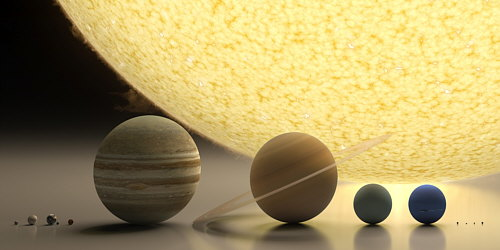

El Sistema Solar es un conjunto formado por el Sol y los cuerpos celestes que orbitan a su alrededor.
Está formado por el Sol y una serie de cuerpos que están ligados con esta estrella por la gravedad: ocho grandes planetas (Mercurio, Venus, Tierra, Marte, Júpiter, Saturno, Urano y Neptuno), junto con sus satélites, planetas menores (entre ellos, el ex-planeta Plutón), asteroides, cometas, polvo y gas interestelar.
Pertenece a la galaxia llamada Vía Láctea, formada por miles de millones de estrellas, situadas a lo largo de un disco plano de 100.000 años luz.
El Sistema Solar está situado en uno de los tres brazos en espiral de esta galaxia llamado Orión, a unos 32.000 años luz del núcleo, alrededor del cual gira a la velocidad de 250 km por segundo, empleando 225 millones de años en dar una vuelta completa, lo que se denomina año cósmico.
Los astrónomos clasifican los planetas y demás cuerpos de nuestro Sistema Solar en tres categorías:
